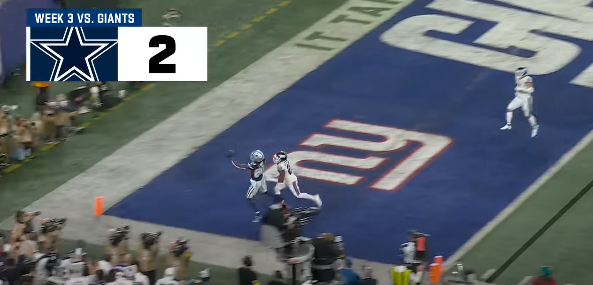
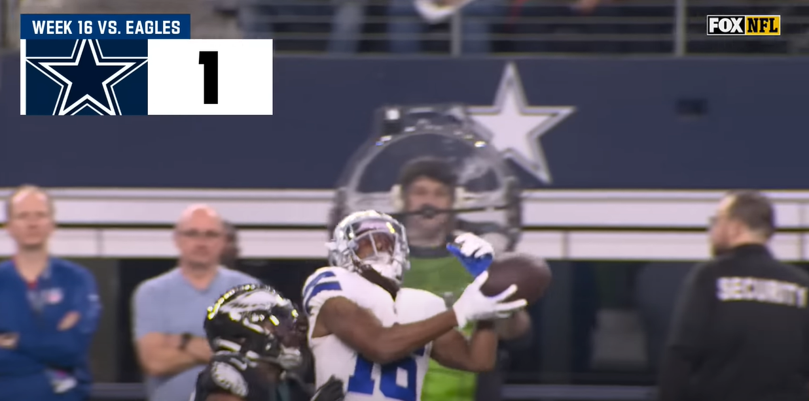

Number 3: This play was against the Bears when Lb/Edge Micah Parsons recovered a fumble and Bears QB Justin Fields jumped right over him thinkinh he was down. He was not. Micah then ran it all the way to the crib for 6.
Number 2: This play was against the Giants where WR Ceedee Lamb caught an amazing one hander for the touchdown.
Number 1: This play was during a nailbiter against the Eagles where WR T.Y. Hilton caught this bomb from QB Dak Prescott arguably sealing the game for dem boyz.